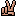
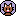
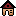

Leah Marie Lövenich
Hangman
Hangman is a classic word-guessing game where the player tries to uncover a hidden word or phrase before a stick figure drawing is completed.

Rock, paper, scissors
Rock Paper Scissors is a fast, two-player hand game where players simultaneously form one of three hand shapes to beat their opponent's choice. In this version, you will play against a computer (PvC)!
 Poopsweeper
Poopsweeper
Poopsweeper (also known as minesweeper) is a logic puzzle game where the goal is to clear a hidden board of squares without clicking on any concealed poops - some tiles indicate the number of nearby stools!

Captain Cat *akt. nur für breite screens
Captain Cat is a variation of the classic Snake game where you guide a growing robot arm across a grid to collect stars for Captain Cat. Avoid bumping into walls or your own arm. Change the arm's direction using the arrow/A, S, D, and W keys on your keyboard or the on-screen keys!

Homepage
Aleady explored and played everything? Go back to the main menu!